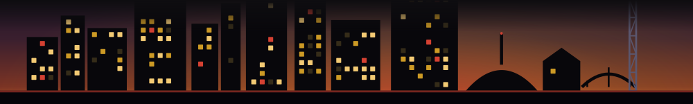

Every week Fleeting logs the time-limited windows opening around Nashville -- and, quietly, when each one closes. This is the cut nobody has run on that record: how long a window actually stays open, by category. The number for each type is its half-life -- the point by which half of them have already closed.
Fastest-closing first. The bar is the half-life; the note below each is the middle-half spread and the share still open after a week.
Held back for now, under our n=15 sample floor: market (7). These publish once the crawl has seen enough of them to report an honest median.
The source is Fleeting's own weekly discovery crawl -- 9 snapshots between Jun 25 - Aug 27, 2026. A window is a distinct listing (its title and venue), counted once even if it appears in several weeks. Its days-open is counted inclusively from the date the listing says it opens to the date it says it closes -- a one-night event is 1 day, a run from the 1st to the 10th is 10. We only count a window when its listing carries both a real open and close date; a new opening with no stated end has no half-life, so it is left out rather than guessed. Half-life is the median: half the windows of that type have closed by then. Categories are folded from the listings' own freeform labels into a fixed set by keyword, and any type with fewer than 15 datable windows is held back rather than reported on thin data. Every number here is produced by build_half_life.py from the crawl record -- there are no hand-entered figures. The underlying table is published as JSON and CSV for anyone who wants to check or cite it. This is a sample of the curated time-limited windows Fleeting tracks, not a census of everything happening in Nashville.
Most of these close within a day. That is the whole problem Fleeting exists for. The Thursday list is the week's time-limited Nashville windows -- the dinners, pop-ups and shows that will be gone by the weekend -- in your inbox while they are still open. No alerts, no notifications; one email a week.
Get the Thursday list, free →Looking for what is open or closing this week? See the conditions board. Which windows keep coming back? the recurring board. The full record is in the archive. Built August 26, 2026.